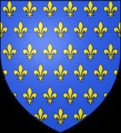
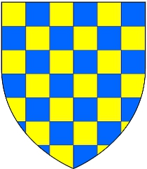

5716836401 Hertiginna Judith av Bretagne
* 982 Bretagne, Frankrike
† 1017 Bretagne, Frankrike
Hertiginna av Normandie
Blev högst 35 år
* 982 Bretagne, Frankrike
† 1017 Bretagne, Frankrike
Hertiginna av Normandie
Blev högst 35 år
11433672802 Duke Conan I av Bretagne
* omkring 950 Bretagne, Frankrike
† 992 Bretagne, Frankrike
Hertig av Bretagne
Blev ca 42 år
* omkring 950 Bretagne, Frankrike
† 992 Bretagne, Frankrike
Hertig av Bretagne
Blev ca 42 år

11433672803 Hertiginna Ermengarde Gerberga av Anjou
* omkring 966 Anjou, France
† 1024 France
Hertiginna av Bretagne
Blev ca 58 år
* omkring 966 Anjou, France
† 1024 France
Hertiginna av Bretagne
Blev ca 58 år
22867345606 Count Geoffrey I "Gråkappan" Grisegonello av Anjou
* 940 Anjou, France
† 987 Chateau-de-Loire, France
Greve av Anjou
Blev högst 47 år
* 940 Anjou, France
† 987 Chateau-de-Loire, France
Greve av Anjou
Blev högst 47 år
45734691212 Fulk II av Anjou
* omkring 905
† 960 Tours, Frankrike
Blev ca 55 år
* omkring 905
† 960 Tours, Frankrike
Blev ca 55 år

22867345607 Countess Adele de Vermandois (de Meaux)
* omkring 945 Vermandois, France
† 975 Angers, France
Grevinna av Anjou
Blev ca 30 år
* omkring 945 Vermandois, France
† 975 Angers, France
Grevinna av Anjou
Blev ca 30 år